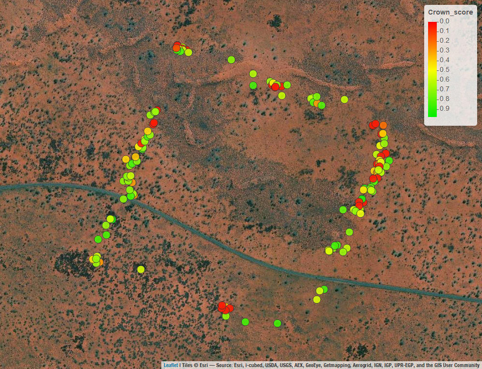

pannotator examples
Data analysis for pannotator paper
Load libraries
This code loads in the libraries needed.
Read species richness, spinifex cover and tree health .rds files
This code reads in the .Rds files containing species, spinifex cover and tree crown data.
Show the code
# Read in the .Rds files containing species, spinifex cover and tree crown data
# If you have exported an .Rds file from PannotatoR
df_species <- readRDS("Data_files/df_species.Rds")
# If you have exported an .csv file from PannotatoR
df_spinifex <- read.csv(file = "Data_files/df_spinifex.csv", header = TRUE, sep = ",")
df_oak <- readRDS("Data_files/oak_data_user1.Rds")Add plot and frame numbers to each .rds file
Now we add the plot and information to each frame in the .rds file. This is useful code if you have multiple plots or subplots in a single .rds file. In this example we have only one plot (plot_06_new). A .csv file linking plot ID to frame or .kmz file ID is required.
Show the code
# Now we add the plot and information to each frame in the .rds file. This is useful code if you have multiple plots or subplots in a single .rds file. In this example we have only one plot (plot_06_new). A .csv file linking plot ID to frame or .kmz file ID is required
# Import the csv file
df_plot_number <- read.csv(file = "Data_files/Plot_names.csv")
# This function adds a plot_kmz column,fills it with a substring from the imagefile column, add a frame column with a substring from the imagefile column, and then match the plot number to the plot_kmz in the df_plot_number dataframe.
add_plot_kmz <- function(df) {
df$plot_kmz <- substr(df$imagefile,1,24)
df$frame <- substring(df$imagefile,1,37 )
df$plot_name_new <- df_plot_number$plot_name_new[match(df$plot_kmz, df_plot_number$plot)]
return(df)
}
df_species <- add_plot_kmz(df_species)
df_spinifex <- add_plot_kmz(df_spinifex)
df_oak <- add_plot_kmz(df_oak)Map the location of data points in each file
This code maps the points for a quick look at the data.
Show the code
# Using the geometry field
df_species <- st_as_sf(df_species, wkt = "geometry",crs = 4326)
s1 <- mapview(df_species)
mapshot(s1, file = "Data_files/species_map.png")
df_spinifex <- st_as_sf(df_spinifex, wkt = "geometry",crs = 4326)
s2 <- mapview(df_spinifex)
mapshot(s2, file = "Data_files/spinifex_map.png")
df_oak <- st_as_sf(df_oak, wkt = "geometry",crs = 4326)
s3 <- mapview(df_oak)
mapshot(s3, file = "Data_files/desertoak_map.png")
if (knitr::is_latex_output()) {
# This part runs only for PDF output
} else if (knitr::is_html_output()) {
# This part runs only for HTML output
s1
s2
s3
} else {
# This part runs if neither PDF nor HTML is the target format
s1
s2
s3
}
Analysis of species distribution and richness data
Clean up the species data (df_species) for mapping and analysis
Show the code
# View(df_species)
# Create a new species variable
df_species$Species_new <- NA
# If variable dd3 = -999, then add species (mulga information), otherwise keep the species listed in dd3. This annoatation was used to quantify mulga cover and also to add additional species #
df_species$Species_new <- ifelse(df_species$dd3 == -999, df_species$species, df_species$dd3)
# For simplicity of data analysis we must now rename the species in the species_new variable
df_species$Species_new[df_species$Species_new == 'Acacia_aneura (mulga)'] <-'Acacia_aneura'
df_species$Species_new[df_species$Species_new == 'Acacia_ligulata (dune wattle)'] <-'Acacia_ligulata'
df_species$Species_new[df_species$Species_new == 'Acacia_minyura (desert mulga)'] <-'Acacia_minyura'
df_species$Species_new[df_species$Species_new == 'Allocasuarina_decaisneana (oak)'] <-'Allocasuarina_decaisneana'
df_species$Species_new[df_species$Species_new == 'Burnt Mulga Mature (3-6m)'] <-'Acacia_aneura'
df_species$Species_new[df_species$Species_new == 'Burnt Mulga Juvenile (1-3m)'] <-'Acacia_aneura'
df_species$Species_new[df_species$Species_new == 'Burnt Mulga Overmature (3-6m)'] <-'Acacia_aneura'
df_species$Species_new[df_species$Species_new == 'Codonocarpus_cotinifolius (poplar)'] <-'Codonocarpus_cotinifolius'
df_species$Species_new[df_species$Species_new == 'Grevillea_eriostachya (honey grevillea)'] <-'Grevillea_eriostachya'
df_species$Species_new[df_species$Species_new == 'Grevillea_stenobotrys (sandhill grevillea)'] <-'Grevillea_stenobotrys'
df_species$Species_new[df_species$Species_new == 'Gyrostemon_ramulosus (camel poison)'] <-'Gyrostemon_ramulosus'
df_species$Species_new[df_species$Species_new == 'Mulga Juvenile (1-3m)'] <-'Acacia_aneura'
df_species$Species_new[df_species$Species_new == 'Mulga Mature (3-6m)'] <-'Acacia_aneura'
df_species$Species_new[df_species$Species_new == 'Mulga Seedling (<1m)'] <-'Acacia_aneura'
df_species$Species_new[df_species$Species_new == 'Santalum_lanceolatum (sandalwood)'] <-'Santalum_lanceolatum'
df_species$Species_new[df_species$Species_new == 'Themeda_australis (kangaroo grass)'] <-'Crotalaria_cunninghamii'
df_species$Species_new[df_species$Species_new == 'Themeda_avenaceae (oat grass)'] <-'Crotalaria_cunninghamii'
df_species$Species_new[df_species$Species_new == 'Acacia_kempeana (granite wattle)'] <-'Acacia_kempeana'
df_species$Species_new[df_species$Species_new == 'Corymbia_opaca (desert bloodwood)'] <-'Corymbia_opaca'
df_species$Species_new[df_species$Species_new == 'Eucalyptus_gamophylla (blue mallee)'] <-'Eucalyptus_gamophylla'
# We now Clean up a few more cases. We don't want any data points that contain no species data, unknown species, or species with unclear taxonomy (e.g., Hakea spp.)
df_species <- subset(df_species, Species_new != "No Mulga present")
df_species <- subset(df_species, Species_new != "Re_Check_Unknown_Shrub")
df_species <- subset(df_species, Species_new != "Hakea_sp")
df_species <- subset(df_species, Species_new != "Acacia_sp")
df_species <- subset(df_species, Species_new != "Gyrostemon_sp.")
# Remove species and location duplicates
duplicated_rows <- duplicated(df_species[c("Species_new", "geometry")])
df_species<- df_species[!duplicated_rows, ]
# We must now jitter the geometries so that we can see the data easier in mapview. Many of the locations are very close together
df_species_jittered <- st_jitter(df_species, amount = 0.00001)Map the species distributions (generate image for Figure 5a in paper)
This is useful code for plotting species distributions in mapview, including setting colour schemes within a user-specified species order.
Show the code
# This code generates Figure 5A
# Confirm the data
#mapview(df_species_jittered, zcol = "Species_new", cex = 8, alpha = 0.9)
# Here I reorder the species from sand dune crest species to swale species (approximately)
df_species_jittered$speciesReorder <- factor(df_species_jittered$Species_new, c('Crotalaria_cunninghamii','Gyrostemon_ramulosus', 'Acacia_ligulata', 'Aluta_maisonneuvei', 'Newcastelia_spodiotricha', 'Gyrostemon_tepperi','Codonocarpus_cotinifolius', 'Grevillea_eriostachya', 'Allocasuarina_decaisneana', 'Exocarpus_sparteus', 'Eremophila_sp', 'Eucalyptus_Mallee_sp.', 'Eucalyptus_gamophylla', 'Corymbia_opaca', 'Acacia_kempeana' ,'Acacia_aneura'))
# Here I colour species groups according to their typical ecological position; e.g., sand dune crest species in red, swale species in white
p <- mapview(df_species_jittered, zcol = "speciesReorder", cex = 5, alpha = 1, alpha.regions = 0.9, layer.name = "Species", col.regions = c("red4","red4", 'red4', "orange", 'yellow3','yellow3', 'yellow2','yellow2','green3','green2','green4', 'deepskyblue2', 'deepskyblue2','purple','white','white'),
na.rm = TRUE)
mapshot(p, file = "Data_files/Fig_5a.png")
if (knitr::is_latex_output()) {
# This part runs only for PDF output
} else if (knitr::is_html_output()) {
# This part runs only for HTML output
p
} else {
# This part runs if neither PDF nor HTML is the target format
p
}Make a 25 m buffer around each plot, create a polygon, segment it and calculate species diversity in each segment
This is useful code to add a buffer around each data point in the dataframe, combined these together if overlapping into a series of polygons. The intent is to then split up the polygons according to another spatial dataframe, in this case a .kml containing lines that divide the west side of the transect into 50 m segments with approximately homogeneous vegetation.
Make buffer around each point and create polygon(s)
Show the code
# Add a spatial buffer of 25m around each point
buffer <- st_buffer(df_species_jittered, dist = 50)
# Combine the resulting buffers into a single polygon
polygon <- st_union(buffer)
# mapview(polygon) # we can see that the buffers have been merged into a series of polygons.
# Export the resulting polygon as a .kml file
st_write(polygon, "Data_files/buffer_plot_polygon.kml", append= FALSE, driver = "KML")Import the .kml file for segmenting the polygon(s) and cut the polygon(s)
Show the code
# This is.kml file that contains lines that cut the westerly side of the study transect into a series of segments roughly 50 m apart. Each segment was oriented to contain homogenous vegetation. It was drawn in Google Earth.
segmentation_lines <- st_read("Data_files/polygon_cuts.kml")
# Map the lines
# mapview(segmentation_lines)
# Before we cut the polygons using the segmentation lines we mustrepair the geometry of the polygon and lines data for any errors
polygon_valid <- st_make_valid(polygon)
# mapview(polygon_valid)
lines_valid <- st_make_valid(segmentation_lines)
# mapview(lines_valid)
# Now cut the polygon using the segmentation lines
cut_polygon <- polygon_valid %>%
lwgeom::st_split(lines_valid) %>%
st_collection_extract("POLYGON")
p <- mapview(cut_polygon)
mapshot(p, file = "Data_files/cut_polygon.png")
if (knitr::is_latex_output()) {
# This part runs only for PDF output
} else if (knitr::is_html_output()) {
# This part runs only for HTML output
p
} else {
# This part runs if neither PDF nor HTML is the target format
p
}Calculate the species richness in each of the new polygons
Show the code
# Now we will calculate the number of species in each polygon segment.We are interested in polygons with IDs.
# The cut_polygon object is an 'sfc' object and we want to make it an 'sf' object
class(cut_polygon)
# Create a new data frame
df <- data.frame(id = 1:length(cut_polygon))
# Add the sfc_POLYGON object as a geometry column
df$geometry <- cut_polygon
# Convert the data frame to an sf object
cut_polygon_sf <- st_as_sf(df)
# Now an sf object with 72 polygons.
# str(cut_polygon_sf)
st_write(cut_polygon_sf, "Data_files/cut_polygon_plot_sf.kml", append= FALSE, driver = "KML")
# Now determine which polygon each point falls into
result <- st_join(df_species_jittered, cut_polygon_sf)
# Convert the polygon ID to character
result$id <- as.character(result$id)
# Now we calculate the species diversity of each polygon
species_div <- result %>%
group_by(id) %>%
summarise(num_species = n_distinct(speciesReorder))
species_divPlot the centroids of each polygon with species richness of the polygon (image for Figure 5f)
Show the code
# To enable plotting we calculate the centroids of each polygon
average_geometry <- st_centroid(species_div$geometry)
species_div_centroids <- st_set_geometry(species_div, average_geometry)
# mapview(species_div_centroids)
# We can select the centroids along the west side of the transect using this code if we want, default is to plot all
# id_values <- c(14:23, 25:38, 2:7, 9)
# Species_div_centroids_subset <- species_div_centroids[species_div_centroids$id %in% id_values, ]
# Rename
species_div_centroids_subset <- species_div_centroids
# Removed the very large unsegmented polygon
species_div_centroids_subset <- species_div_centroids_subset[species_div_centroids_subset$num_species < 7, ]
# Check the data
# mapview(species_div_centroids_subset)
mapviewOptions(basemaps = c("Esri.WorldImagery"),
raster.palette = grey.colors,
vector.palette = colorRampPalette(c("white", "red3")),
na.color = "gray",
layers.control.pos = "topright")
q <- mapview(species_div_centroids_subset, zcol = "num_species", layer.name = "Richness", cex = 8, alpha = 0.9, alpha.regions = 0.9, na.rm = TRUE)
mapshot(q, file = "Data_files/Fig_5f.png")
if (knitr::is_latex_output()) {
# This part runs only for PDF output
} else if (knitr::is_html_output()) {
# This part runs only for HTML output
q
} else {
# This part runs if neither PDF nor HTML is the target format
q
}Analysis of spinifex data
Check the data and correct outliers
Here we are interested in analysing two variables: the % cover of live and dead material within the 10 m diameter plots.
Show the code
# Ensure variables are numeric
df_spinifex$live_cover<- as.numeric(df_spinifex$live_cover)
df_spinifex$dead_cover<- as.numeric(df_spinifex$dead_cover)
# Check the range of the data fields of interest. Percentage cover is the % cover within the 10 m diameter plots, impact score is based on the percentage of dead versus live material.
# Within range
summary(df_spinifex$live_cover)
# Within range
summary(df_spinifex$dead_cover)
# Generate an object with total live and dead cover in each frame
frame_sum <- df_spinifex %>%
group_by(frame) %>%
summarise(across(c(dead_cover, live_cover), sum, .names = "{.col}"))
# Calculate the total spinifex cover variable
frame_sum$total_cover <- frame_sum$dead_cover+ frame_sum$live_cover
frame_sumMap the total cover of live and dead cover within each image frame (images for Figures 6c and 6d)
Show the code
# Rename the object
data <- frame_sum
# Set the mapview options for live cover
mapviewOptions(basemaps = c("Esri.WorldImagery"),
raster.palette = grey.colors,
vector.palette = colorRampPalette(c("transparent", "green", 'darkgreen')),
na.color = "gray",
layers.control.pos = "topright")
# Plot of live cover
p <- mapview(data, zcol = "live_cover", layer.name = "Cover(%)", cex = 10, alpha = 0.9, alpha.regions = 0.9, na.rm = TRUE)
#p
mapshot(p, file = "Data_files/Fig_6c.png")
# Set the mapview options for dead cover
mapviewOptions(basemaps = c("Esri.WorldImagery"),
raster.palette = grey.colors,
vector.palette = colorRampPalette(c("white", "red", "darkred")),
na.color = "gray",
layers.control.pos = "topright")
# Plot of dead cover
q <- mapview(data, zcol = "dead_cover", layer.name = "Cover(%)", cex = 10, alpha = 0.9, alpha.regions = 0.9, na.rm = TRUE)
mapshot(q, file = "Data_files/Fig_6d.png")
#q
if (knitr::is_latex_output()) {
# This part runs only for PDF output
} else if (knitr::is_html_output()) {
# This part runs only for HTML output
p
q
} else {
# This part runs if neither PDF nor HTML is the target format
p
q
}
Map the cover of different spinifex size classes within each image frame (image for Figure 6e)
Re-name spinifex species/size data for size class analysis
Show the code
df_spinifex$species[df_spinifex$species == 'No Triodia Present'] <- 'Absent'
df_spinifex$species[df_spinifex$species == 'Triodia pungens >100cm old fragmentary'] <- 'frag'
df_spinifex$species[df_spinifex$species == 'Triodia sp. >100cm old fragmentary'] <- 'frag'
df_spinifex$species[df_spinifex$species == 'Triodia pungens < 50 cm'] <- '<50'
df_spinifex$species[df_spinifex$species == 'Triodia sp. 50-<100 cm'] <- '50_100'
df_spinifex$species[df_spinifex$species == 'Triodia sp. 100-<200 cm'] <- '100_200'
df_spinifex$species[df_spinifex$species == 'Triodia pungens 200-<400 cm'] <- '200_400'
df_spinifex$species[df_spinifex$species == 'Triodia sp. < 50 cm'] <- '<50'
df_spinifex$species[df_spinifex$species == 'Triodia pungens 50-<100 cm'] <- '50_100'
df_spinifex$species[df_spinifex$species == 'Triodia pungens 100-<200 cm'] <- '100_200'
df_spinifex$species[df_spinifex$species == 'Triodia schinzii 50-<100 cm'] <- '50_100'
df_spinifex$species[df_spinifex$species == 'Triodia pungens 400+ cm'] <- '>400'Calculate and map the cover and distribution of < 50cm and fragmentary (old > 1m) size classes (image for Figure 6e)
Show the code
# Subset spinifex data for only < 50 cm size class
Less50cm <- subset(df_spinifex, df_spinifex$species == "<50")
# Subset spinifex data for only old fragmentary size class
frag <- subset(df_spinifex, df_spinifex$species == "frag")
# Jitter the data so that they can be seen more easily in the map
jittered_frag <- st_jitter(frag, amount = 0.0001)
jittered_Less50cm <- st_jitter(Less50cm, amount = 0.0001)
# Map the variables together - Figure 6e
p <- mapview(jittered_frag, zcol = "percentage_cover", layer.name = "Frag_Cover(%)", cex = 8, alpha = 0.9, alpha.regions = 0.75, col.regions = colorRampPalette(c("yellow", "orange", 'orange4')), na.rm = TRUE) + mapview(jittered_Less50cm, zcol = "percentage_cover", cex = 8, alpha = 0.75, alpha.regions = 0.9, col.regions = colorRampPalette(c("lightblue", "blue", 'darkblue')),layer.name = "L50_Cover(%)", na.rm = TRUE)
mapshot(p, file = "Data_files/Fig_6e.png")
if (knitr::is_latex_output()) {
# This part runs only for PDF output
} else if (knitr::is_html_output()) {
# This part runs only for HTML output
p
} else {
# This part runs if neither PDF nor HTML is the target format
p
}Create boxplot of size class vs pre-drought and post-drought percentage cover with kruskal-wallis test (image for Figure 6f)
Show the code
df_spinifex_full_data <- df_spinifex
df_spinifex <- df_spinifex %>%
filter(percentage_cover > 0)
df_spinifex <- df_spinifex[df_spinifex$species != 'Absent', ]
df_spinifex <- df_spinifex[df_spinifex$species != 'NA', ]
df_spinifex$speciesReorder <- factor(df_spinifex$species, c("<50", "50_100", "100_200", "200_400", ">400", "frag"))
p <- ggplot(df_spinifex, aes(x = speciesReorder, y = percentage_cover)) +
geom_boxplot() + theme_bw() + theme(panel.grid.major = element_blank(),
panel.grid.minor = element_blank()) +
theme(axis.text.x = element_text(size = 14),
axis.text.y = element_text(size = 14))
p <- p + ggtitle("") +
xlab("Size class (cm)") + ylab("Pre-drought cover") +
theme(axis.text=element_text(size=12), axis.title=element_text(size=14,face="bold"))
ggsave("Data_files/Fig_6f.png", width = 6.81, height = 6.45, dpi = 300)
# Test for nonparametric relationship between percentage cover and size class
kruskal.test(percentage_cover ~ speciesReorder, data = df_spinifex)Analysis of desert oak crown health data
Import the lookup csv containing size classes and match to size class data in the df_oak object
Show the code
# The original df_oak data have been imported in code above
# Import the match table
df_oak_class <- read.csv("Data_files/Oak_sizes_reclass.csv")
# We must create new variables to allow the match
df_oak$Taxon <- NA
df_oak$Size_class <- NA
df_oak$Burnt <- NA
df_oak$Count <- NA
# We must remove whitespace and other incompatibilities
df_oak$species <- str_replace_all(df_oak$species, "<.*?>", "")
df_oak_class$species <- str_replace_all(df_oak_class$species, "<.*?>", "")
df_oak$species <- str_to_lower(df_oak$species)
df_oak$species <- str_replace_all(df_oak$species, "\\s+", "")
df_oak_class$species <- str_to_lower(df_oak_class$species)
df_oak_class$species <- str_replace_all(df_oak_class$species, "\\s+", "")
# Now merge Taxon, Burnt, Size_class, Species
df_oak$Taxon <- df_oak_class$Taxon[match(df_oak$species, df_oak_class$species)]
df_oak$Burnt <- df_oak_class$Burnt[match(df_oak$species, df_oak_class$species)]
df_oak$Count <- df_oak_class$Count[match(df_oak$species, df_oak_class$species)]
df_oak$Size_class <- df_oak_class$Size_class[match(df_oak$species, df_oak_class$species)]Calculate crown health score and compare crown health across size classes (create image for Figure 7f)
Show the code
# Ensure that the variables are numeric
df_oak$dd1 <- as.numeric(df_oak$dd1)
df_oak$dd2 <- as.numeric(df_oak$dd2)
df_oak$dd3 <- as.numeric(df_oak$dd3)
# Calculate the crown score (HC = AC CE CD in paper)
df_oak$Crown_score <- df_oak$dd1/100 * df_oak$dd2/100 * df_oak$dd3/100
# Reorder the classes in order of size
df_oak$Size_class_Reorder <- factor(df_oak$Size_class, c("Seedling", "Juvenile", "Early_Pole", "Late_Pole", "Early_Mature", "Mature"))
# Boxplot of size class and burnt vs crown score
p <- ggplot(df_oak, aes(x = Size_class_Reorder, y = Crown_score, z = Burnt, fill = Burnt, color = Burnt )) +
geom_boxplot() + theme_bw() + theme(panel.grid.major = element_blank(),
panel.grid.minor = element_blank()) +
scale_fill_manual(values=c("green4","brown3")) +
scale_color_manual(values=c("darkgreen","brown4")) +
theme_classic() +
theme(panel.border = element_rect(color = "black", fill = NA, size = 2))
p <- p + ggtitle("") +
xlab("Size class") + ylab("Crown score") +
theme(axis.text=element_text(size=12), axis.title=element_text(size=14,face="bold"))
ggsave("Data_files/Fig_7f.png", width = 7.25, height = 6.45, dpi = 300)
# Test for nonparametric relationship between crown score and burnt + size class
scheirerRayHare(Crown_score ~ Burnt + Size_class_Reorder, data = df_oak)Map burnt and unburnt tree crowns (image for Figure 7e)
Show the code
# Map burnt and unburnt areas
p <- mapview(df_oak, zcol = "Burnt", cex = 8, alpha = 0.9, alpha.regions = 0.9, layer.name = "Burnt", col.regions = c("green2", "red2"), na.rm = TRUE)
mapshot(p, file = "Data_files/Fig_7e.png")
if (knitr::is_latex_output()) {
# This part runs only for PDF output
} else if (knitr::is_html_output()) {
# This part runs only for HTML output
p
} else {
# This part runs if neither PDF nor HTML is the target format
p
}Map the distribution of tree size classes (image for Figure 7c)
Show the code
# Map size classes
p <- mapview(df_oak, zcol = "Size_class_Reorder", cex = 8, alpha = 0.9, alpha.regions = 0.9, layer.name = "Size_class", col.regions = c("#389f0a", "#389f0a","yellow", "yellow", "red4", "red4"),na.rm = TRUE)
mapshot(p, file = "Data_files/Fig_7c.png")
if (knitr::is_latex_output()) {
# This part runs only for PDF output
} else if (knitr::is_html_output()) {
# This part runs only for HTML output
p
} else {
# This part runs if neither PDF nor HTML is the target format
p
}Plot the crown health of mature and early mature size classes (Figure 7d)
Show the code
# Select only mature and early mature size classes
Mature <- subset(df_oak, df_oak$Size_class == "Mature" | df_oak$Size_class == "Early_mature")
mapviewOptions(basemaps = c("Esri.WorldImagery"),
raster.palette = grey.colors,
vector.palette = colorRampPalette(c("red", "yellow", "green2")),
na.color = "gray",
layers.control.pos = "topright")
p <- mapview(df_oak, zcol = "Crown_score", layer.name = "Crown_score", cex = 8, alpha = 0.9, alpha.regions = 0.9, na.rm = TRUE)
mapshot(p, file = "Data_files/Fig_7d.png")
if (knitr::is_latex_output()) {
# This part runs only for PDF output
} else if (knitr::is_html_output()) {
# This part runs only for HTML output
p
} else {
# This part runs if neither PDF nor HTML is the target format
p
}